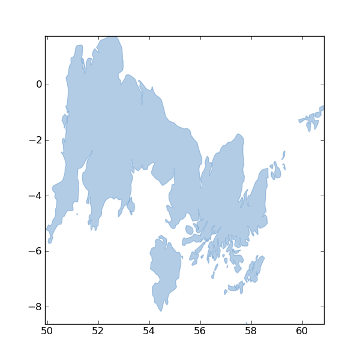

It's been a valuable experiment in standards making
About Me
I write programs for classicists
And libraries for Python programmers
Some are geospatial (Shapely, &c.)
I ❤ XML
I ❤ ❤ ❤ the Web
And the Web loved XML, too
... for a while.
I think the Web community has spoken, and it's clear
that what it wants is HTML5, JavaScript and JSON. XML
isn't going away but I see it being less and less a Web
technology; it won't be something that you send over
the wire on the public Web, but just one of many
technologies that are used on the server to manage and
generate what you do send over the wire.
While I do not mind folks ignoring ISO 19107 (which is
the official OGC geometry volume) in small things, it
is disconcerting to have the requirement to catalogue
the disconnects to understand what is suppose to be
a simple specification.
—Exasperated Architect (2007)
GeoJSON is Spectacularly Wrong.
—Exasperated Developer (2012)
Coordinate Order is a Big Deal

GeoJSON is not Lat, Lng
To match OGR
To match KML
It surprises the naive
It annoys the expert
It is what it is
GeoJSON does not conform with ISO 191**
Because we wanted to ship soon
And get back to work writing programs
It's a blocker for some vendors
Good news: GML is just as good as it ever was
But GeoJSON Does Good, too
The Spec Doesn't Waste Your Time
8 pages (printed)
HTML
With section targets
No click-through license agreement
Stable. There will be no GeoJSON 2.0
GeoJSON is good for programmers
def explode(coords):
"""Explode a GeoJSON geometry's coordinates object and yield coordinate
tuples. As long as the input is conforming, the type of the geometry
doesn't matter.
"""
for e in coords:
if isinstance(e, (float, int, long)):
yield coords
break
else:
for f in explode(e):
yield f
GeoJSON is flexible
It's a good fit for Map/Reduce: http://mike.teczno.com/notes/elephants-osm-hadoop.html